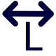

p. 1/1
---

--- --- ---Extra
Op deze pagina:
Materiaallijst
Vul prijzen in om een totaal te krijgen; ze worden onthouden voor volgende projecten.
Controle
Een controle op de belangrijkste AREI-regels voor woningen. Dit helpt bij het tekenen maar vervangt de keuring niet. Klik een melding om naar het onderdeel te gaan.